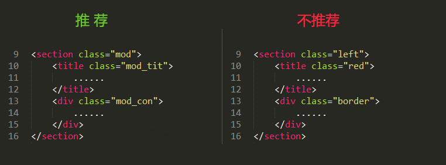

代码注释是非常重要的部分，合理的代码注释更加有利于团队合作和代码维护。需要被注释的总体分为三类：文件头注释、模块头注释及行注释
文件头注释：每个新生成的文件，需要添加一个文件头部的注释，最主要的写明谁在什么时间为什么创建：创建者, 创建日期, 文件描述等。例：
/* * 创建者 : 郭迎 * 创建日期: 2018/03/16 * 文件描述: 描述文件用途，适用范围及注意事项等。 */
模块头注释：每个模块，需要添加一个模块头注释，主要是描述清楚：模块名称，使用范围等 例：
/* * 模块名称: 搜索 * 使用范围: 全站 */
行注释：为需要特殊注释的行添加。例：
/*此行代码为需求文档地址*/
使用Tab进行代码缩进，建议设置Tab为4个空格的宽度
遵循结构、表现、行为相分离的理念，性能优化和可维护性相平衡，实用高于完美的原则
DOCTYPE：推荐使用 HTML5 的文档类型申明。例：
标签语义化：尽量遵循HTML标准和语义，良好的HTML文档结构不仅更利于维护，还能够提升页面的可访问性，标准化的代码也有利于SEO。常用的标签见下表：
| 标签 | 标签语意 | 标签 | 语意 |
|---|---|---|---|
| div | 块级通用容器 | span | 定义被用来组合文档中的行内元素，没有实际意义，通常用于控制行内元素的样式 |
| h1-h6 | 定义标题，h1定义最大的标题，h6定义最小的标题 | a | 定义超链接，用于从一个页面链接到另一个页面 |
| header | 定义文档的页眉，通常作为页面头部区域容器使用 | button | 定义按钮 |
| nav | 定义导航链接的部分，通常用于页面导航区域的容器使用 | del | 定义被删除文本 |
| section | 定义文档中的节（section、区段）。通常作为页面模块的容器使用 | sub, sup | sub定义下标文本,sup定义上标文本 |
| aside | 定义其所处内容之外的内容。通常作为页面侧边栏的容器使用 | strong, em | strong和em皆定义强调文本，区别在于em表示局部内容强调，strong表示全局强调，strong的强调程度要比em更强烈 |
| ul, ol, li | ul和ol均皆定义列表，ul定义无序列表，ol，定义有序列表，li定义列表项目 | b, i | b定义粗体，i定义斜体 |
| dl, dt, dd | dl定义定义列表（definition list），dt定义定义列表中的项目，dd定义定义列表中项目的描述 | img | 定义图像 |
| p | 定义段落 | label | 定义input元素的标注 |
| table, thead, tbody, tfoot, th, tr, td, colgroup, col |
table定义表格，thead定义表格中的表头内容，tbody定义表格中的主体内容，tfoot定义表格中的表注内容（脚注），th定义表格中的表头单元格，tr定义表格中的行，定义表格中的单元，colgroup定义表格中供格式化的列组，col定义表格中一个或多个列的属性值 | input | 定义输入控件 |
| footer | 定义文档或节的页脚，通常作为页面尾部区域容器使用 | textarea | 定义多行的文本输入控件 |
更多标签详细说明可以查看 W3Cschool的参考手册 。
其他细节：
· 尽可能避免多余而没有语意结构元素
· 标签名、属性值及属性名统一都使用小写字母。例：
· 在可维护性不受影响情况下，尽可能不把内联标签换行，避免产生文本节点而造成的视觉空隙
条件允许的情况下，建议使用 W3C HTML validator 进行HTML代码的标准规范验证。一方面可以保证html编码的合法性，另一方面也可以提升对基础知识的了解。
· 参考BEM的命名规范，BEM代表 “模块（block）,元素（element）,修饰符（modifier）。block使用驼峰式命名，element与block使用下划线“_”连接，modifier与element之间使用中划线“-”连接。详细说明如下：
_下划线：下划线用来连接块和块的子元素 -中划线：中划线用来描述一个块或者块的子元素的一种状态 thisBlock_element-modifier
· CSS名称用描述内容或结构的英文关键词来命名，不使用表现的名词命名，英文单词尽可能不缩写，也不要使用汉语拼音。例：

· 常用的CSS命名如下表：
| 模块 | 命名 | 模块 | 命名 | 模块 | 命名 |
|---|---|---|---|---|---|
| 头部 | header | 内容 | container | 尾部 | footer |
| 导航 | nav | 菜单 | menu | 子导航/子菜单 | subnav/submenu |
| 外围容器 | wrapper | 侧栏 | sidebar | 栏目/列 | column |
| 搜索 | search | 登录 | login | 注册 | register |
| 标题 | title | 内容 | content | 摘要 | summary |
| 标志 | logo | 标签页 | tab | 列表 | list |
| 广告 | banner | 热点 | hot | 新闻 | news |
| 下载 | download | 友情链接 | friendlink | 滚动 | scroll |
| 服务 | service | 投票 | vote | 版权 | copyright |
| 小技巧 | tips | 提示信息 | msg | 指南 | guide |
| 当前态 | current | 注释 | note | 图标 | icon |